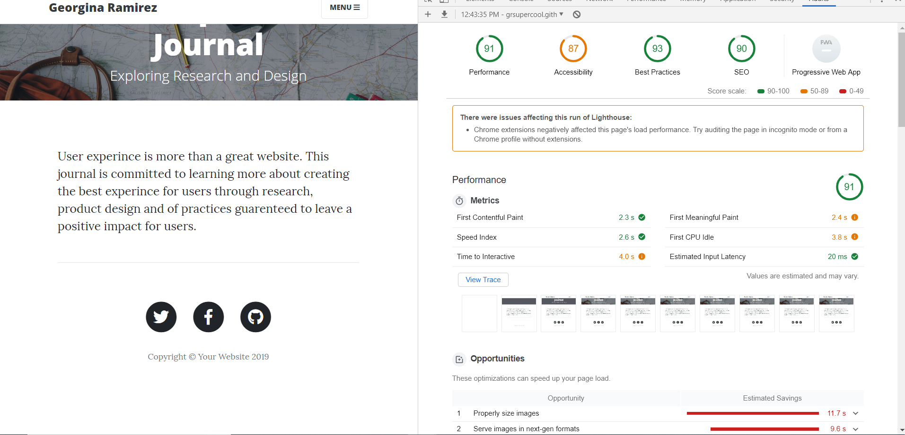
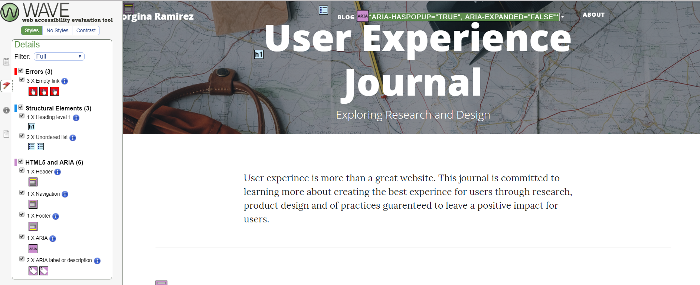
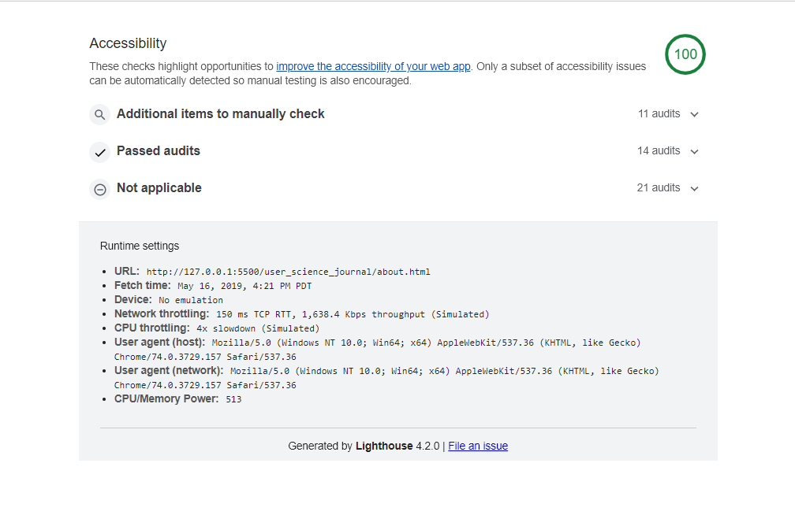
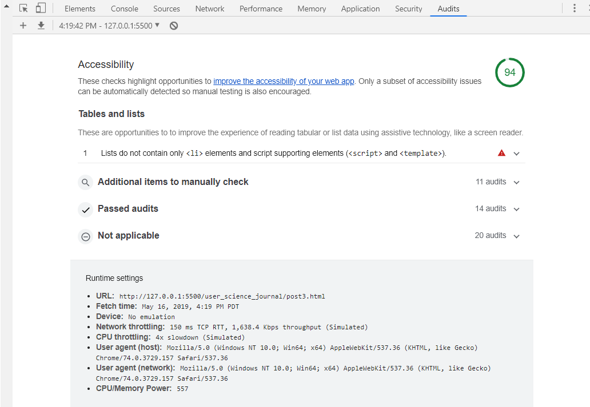

Improving User Journal Accessibility
In the last post the importance of accesibility was dicussed.This post is committed to improving the User Experience Journal by auditing specific pages in the post, gathering data to identify areas of accessibility needing improvement and the implementing solutions to improve the accesibility of the User Science Journal using the Bootstrap Template.
Tools used to Evaluate Web-Page Accessibility:
The tools used to evaluate page accessibility include Lighthouse and Wave. Lighthouse is a Google Chrome tool provided by gathers information from webpages, audits the webpage and ranks their accessibility into four main categories. The four categories include accesibility,performance, SEO, and best practice for the purpose of this the accesibility score is the main emphasis and other categroies are disregarded.
User Journal Posts Evaluated for Accessibility:
The User Journal Post evaluated for accessibility using Wave and Lighthouse are post 3, UsabilityTest for MeatandBread.com and the User Journal About Page.The About Page was selected for evaluation because the page has minimal content,however,is a page to evaluate for the general accessibility of the Bootstrap Template.
Post 3 the Meatandbread.com Usability Test, was selected due to combination of headers, photos, links, and content.
The About Page Accessibility Results
Lighthouse Accessibility test for the About Page of the User Science Journal. The Lighthouse accessibility score for the about page was 87 becsue links do not have a discernable names.
 Lighthouse Results for About PageThe Wave accessibility scan indicated the links, structural elements, and HTML5 and Aria headers areas to improve accessibility.
 Wave Results for About PagePost 3 Usability Lighthouse and Wave Accessibility Results
Post 3, Meat and Bread Website Usability was selected for evaluation as the page has some of the typical elements of a traditional blog. Header, photos, images, multiple headers, and social media links making the page a good choice for evaluation.
The Lighthouse accessibility audit a score of 82.The accessibility concerns for the post 3 include links do not have discernable names and lists do not contain
Commentary on Accessibility Improvements to the Bootstrap Template
According to Lighthouse and Wave, “Link text (and alternate text for images, when used as links) that is discernible,unique, and focusable improves the navigation experience for screen reader users.”
Adding a link description, improving the header levels and adding header and footer elements improve accessibility by improving page semantics, keyboard navigation and screen reading ability.
As hypothesized,The About Page Aacessibility issues transcend all of the pages due to the Bootstrap Template. Bootstrap as a blogging tool can benefit from applying all the recommended improvements to the template layout for the equitable distribution of blogger content, improving the experience to users who depend on keyboard navigation and screen readers. Since both tools identified Wave and Lighthouse link text and link description as areas imporvement the remaining post will describe how the improvements were implemented to improve accesibility scores for the User Experince Journal.
Solutions to Improve Accessibility.
The Lighthouse and Wave Accessibility audit results for the About page and post 3 recommended adding link titles to the social media links. The process of adding link titles included adding aria-lable to the href which was completed by adding “aria-label=” social media icon name”. Post 3 included two ordered lists that required reformatting. I updated both Ol to Ul to increase readibility. Since the social media links are a component of the bootstrap template, the aria-label was added to each post to improve the overall score the accessibility for the User Experience Journal.In additin, alt text and image descriptions were added to all the images in the User Experince Journal. The alt text describes the images for users who depend on screen readers.  About Page Accesibility Improvements  Post 3 Accesibility Improvements